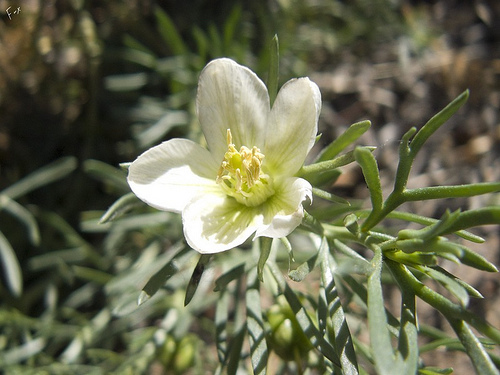

Nitrariaceae
Nitre Bush Family
Nitrariaceae is a small family of shrubs and perennial herbs adapted to arid, semi-arid, and saline environments, placed in the order Sapindales within the Rosids clade (Malvids). Following the APG IV classification, the family includes three genera (Nitraria, Peganum, Tetradiclis) and about 10-16 species. They have a widespread but scattered distribution across Central Asia, the Mediterranean, Africa, Australia, and SW North America. Characteristics often include fleshy leaves, 4- or 5-merous flowers with 10-15 stamens, superior ovaries, and fruit either a drupe or a capsule.
Overview
The Nitrariaceae family, in its current circumscription including Peganum and Tetradiclis alongside Nitraria, comprises about 10-16 species of plants highly adapted to harsh environments. They are typically found in deserts, steppes, salt marshes, and other dry or saline habitats across vast, often disjunct, areas of the Old World, Australia, and extending into North America (Peganum).
Historically, the placement of these genera was debated. Nitraria was often placed near Zygophyllaceae, while Peganum and Tetradiclis were sometimes in their own families (Peganaceae, Tetradiclidaceae) or associated with Zygophyllaceae or Rutaceae. Molecular data, however, strongly supports their grouping together within the order Sapindales, related to families like Sapindaceae, Rutaceae, and Anacardiaceae.
Some species have ethnobotanical significance. Nitraria fruits are edible, and the plants can be used for dune stabilization. Peganum harmala (Syrian Rue) is well-known for containing psychoactive alkaloids (harmala alkaloids) and has a long history of use in traditional medicine and rituals in the Middle East and Central Asia.
Quick Facts
- Scientific Name: Nitrariaceae Lindl.
- Common Name: Nitre Bush family
- Number of Genera: 3 (Nitraria, Peganum, Tetradiclis)
- Number of Species: Approximately 10-16
- Distribution: Widespread but scattered in arid/saline regions: Mediterranean, N & S Africa, C Asia, Australia, SW North America.
- Evolutionary Group: Eudicots - Rosids - Malvids - Sapindales
Key Characteristics
Growth Form and Habit
Perennial herbs (Peganum, Tetradiclis) or shrubs (Nitraria), often succulent or fleshy. Nitraria species are often spiny. Adapted to arid and saline conditions (halophytes).
Leaves
Leaves are alternate or sometimes fascicled (clustered), simple and entire or lobed (Nitraria, Tetradiclis), or pinnately dissected (Peganum). Leaves are often fleshy or succulent. Stipules are present, sometimes deciduous, sometimes modified into spines (Nitraria), or dissected and persistent (Peganum).
Inflorescence
Flowers are borne solitary or in terminal or leaf-opposed cymes or dichasia.
Flowers
Flowers are typically bisexual (rarely unisexual), actinomorphic (radially symmetrical), and usually 4- or 5-merous. Key features include:
- Calyx: 4-5 sepals, free or fused at the base, persistent.
- Corolla: 4-5 petals, free, often white or yellowish, sometimes absent (Tetradiclis).
- Androecium: Stamens typically (8-)10-15, often in 2 or 3 whorls, inserted at the base of or on a fleshy nectar disc. Filaments are distinct.
- Gynoecium: Ovary is superior, composed of 2-6 fused carpels (syncarpous). It is multilocular (as many chambers as carpels, or sometimes appearing unilocular above), with 1 (or few) ovules per locule on axile or apical-axile placentas. Style(s) are distinct or fused into a single structure.
Fruits and Seeds
The fruit is either a fleshy drupe with a hard stone (Nitraria) or a loculicidal capsule, sometimes slightly fleshy (Peganum, Tetradiclis). Seeds contain endosperm.
Chemical Characteristics
Often contain alkaloids, particularly beta-carboline alkaloids (harmala alkaloids) in Peganum. Also may contain flavonoids and tannins. Adaptations for salt tolerance are common.
Field Identification
Identifying Nitrariaceae involves recognizing their adaptation to arid/saline habitats, often fleshy or dissected leaves, 4/5-merous flowers with typically 10-15 stamens and a superior ovary, and fruit type (drupe or capsule), specific to the genus.
Primary Identification Features
- Habit: Shrubs or herbs, often fleshy/succulent, sometimes spiny.
- Habitat: Arid, semi-arid, or saline environments.
- Leaves: Alternate or fascicled, simple or pinnately dissected, often fleshy. Stipules often present (sometimes spiny or dissected).
- Flowers: Actinomorphic, 4- or 5-merous, bisexual (usually).
- Stamens: Typically 10-15, often in 2-3 whorls, associated with a nectar disc.
- Ovary: Superior, syncarpous, 2-6 carpels/locules.
- Fruit: Drupe (Nitraria) or Capsule (Peganum, Tetradiclis).
Secondary Identification Features
- Petals: Free, often white/yellow, sometimes absent.
- Placentation: Axile or apical-axile, 1 (or few) ovules per locule.
- Distribution: Specific arid/saline regions of Old World, Australia, SW N America.
Seasonal Identification Tips
- Growing Season: Active growth and flowering often occur after infrequent rains in their habitats.
- Fruiting Season: Fruits can be diagnostic; fleshy drupes of Nitraria or capsules of Peganum/Tetradiclis.
- Vegetative Features: Habit, leaf type (simple/fleshy/spiny vs. dissected), stipule presence/type, and habitat are useful year-round clues.
Common Confusion Points
- Zygophyllaceae (Caltrop Family): Also adapted to arid regions, some have fleshy or compound leaves. Differ in usually having opposite leaves, flowers typically with superior ovary and often prominent appendages on filaments, fruit usually a capsule or schizocarp (often angled or winged).
- Frankeniaceae (Sea Heath Family): Halophytic herbs/subshrubs with small, opposite, often ericoid leaves and flowers with petals often clawed and appendaged, superior ovary, fruit a capsule within persistent calyx.
- Tamaricaceae (Tamarisk Family): Halophytic shrubs/trees with scale-like leaves, flowers small in dense racemes/panicles, superior ovary, fruit a capsule with hairy seeds.
- Rutaceae (Citrus Family): Also in Sapindales, often aromatic with pellucid dots in leaves, flowers usually with superior ovary, fruit diverse (hesperidium, capsule, drupe, samara). Peganum was sometimes placed here.
Field Guide Quick Reference
Look For:
- Shrubs/herbs (arid/saline habitats)
- Leaves alternate, simple or dissected, often fleshy
- Stipules often present (sometimes spiny/dissected)
- Flowers 4/5-merous
- Stamens 10-15 (usually)
- Superior ovary
- Fruit a Drupe (Nitraria) or Capsule (Peganum, Tetradiclis)
Key Variations:
- Habit (shrub vs. herb)
- Leaf type (simple vs. dissected)
- Fruit type (drupe vs. capsule)
- Presence/absence of spines
Notable Examples
The family includes three distinct genera:

Nitraria spp.
Nitre Bush
A genus of about 9 species of spiny, often succulent shrubs found in saline deserts and coastal areas from North Africa and the Mediterranean through Central Asia to Australia. Leaves are simple, often fleshy, sometimes clustered. Flowers are 5-merous. Fruit is a small, edible drupe (red, purple, or black).

Peganum harmala
Syrian Rue, Harmal
A perennial herb native from the Mediterranean region east to India, also introduced to SW North America. Leaves are pinnately dissected into linear segments. Flowers are white, 5-merous, with 15 stamens. Fruit is a globose capsule. Known for containing psychoactive harmala alkaloids.

Tetradiclis tenella
(No common name)
The sole species in its genus, a small, slightly succulent annual herb found from SE Europe and N Africa east to Central Asia. Leaves are simple or pinnately lobed. Flowers are tiny, 4-merous, often lacking petals. Fruit is a 4-lobed capsule.
Phylogeny and Classification
Nitrariaceae is placed in the order Sapindales, within the Malvids clade of Rosids (eudicots). This placement, grouping Nitraria, Peganum, and Tetradiclis, is strongly supported by molecular phylogenetic data, resolving previous uncertainties about their affinities.
Within Sapindales, Nitrariaceae represents a distinct lineage. Its exact sister group relationship is still debated, but it is clearly part of the order that includes major families like Sapindaceae, Rutaceae, Anacardiaceae, Meliaceae, and Burseraceae. Its inclusion expands the morphological diversity known within Sapindales, particularly regarding adaptations to extreme arid and saline environments.
Position in Plant Phylogeny
- Kingdom: Plantae
- Clade: Angiosperms (Flowering plants)
- Clade: Eudicots
- Clade: Rosids
- Clade: Malvids
- Order: Sapindales
- Family: Nitrariaceae
Evolutionary Significance
Nitrariaceae provides insights into Sapindales evolution and plant adaptation:
- Adaptation to Extreme Environments: Represents a lineage within Sapindales highly specialized for arid and saline conditions (halophytism), showcasing convergent adaptations with unrelated desert/salt-tolerant families.
- Phylogenetic Resolution: Its confirmed placement clarifies relationships among families previously associated with Zygophyllales or Rutales, refining the understanding of the Sapindales order.
- Morphological Diversity in Sapindales: Adds herbaceous members and unique fruit types (drupes in Nitraria, capsules in others) to an order dominated by woody plants with different characteristic fruits (like samaras in Sapindaceae, hesperidia in Rutaceae).
- Biogeography: The family's wide but fragmented distribution across arid zones of multiple continents poses interesting questions about historical dispersal and vicariance.